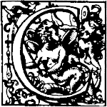
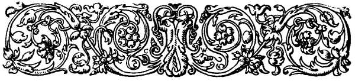

Chapter 3: Note by the Translator¶

onsidering the great influence which this Treatise has exercised in the development of the Science of Optics, it seems strange that two centuries should have passed before an English edition of the work appeared. Perhaps the circumstance is due to the mistaken zeal with which formerly everything that conflicted with the cherished ideas of Newton was denounced by his followers. The Treatise on Light of Huygens has, however, withstood the test of time: and even now the exquisite skill with which he applied his conception of the propagation of waves of light to unravel the intricacies of the phenomena of the double refraction of crystals, and of the refraction of the atmosphere, will excite the admiration of the student of Optics. It is true that his wave theory was far from the complete doctrine as subsequently developed by Thomas Young and Augustin Fresnel, and belonged rather to geometrical than to physical Optics. If Huygens had no conception of transverse vibrations, of the principle of interference, or of the existence of the ordered sequence of waves in trains, he nevertheless attained to a remarkably clear understanding of the principles of wave-propagation; and his exposition of the subject marks an epoch in the treatment of Optical problems. It has been needful in preparing this translation to exercise care lest one should import into the author's text ideas of subsequent date, by using words that have come to imply modern conceptions. Hence the adoption of as literal a rendering as possible. A few of the author's terms need explanation. He uses the word "refraction," for example, both for the phenomenon or process usually so denoted, and for the result of that process: thus the refracted ray he habitually terms "the refraction" of the incident ray. When a wave-front, or, as he terms it, a "wave," has passed from some initial position to a subsequent one, he terms the wave-front in its subsequent position "the continuation" of the wave. He also speaks of the envelope of a set of elementary waves, formed by coalescence of those elementary wave-fronts, as "the termination" of the wave; and the elementary wave-fronts he terms "particular" waves. Owing to the circumstance that the French word rayon possesses the double signification of ray of light and radius of a circle, he avoids its use in the latter sense and speaks always of the semi-diameter, not of the radius. His speculations as to the ether, his suggestive views of the structure of crystalline bodies, and his explanation of opacity, slight as they are, will possibly surprise the reader by their seeming modernness. And none can read his investigation of the phenomena found in Iceland spar without marvelling at his insight and sagacity.
S.P.T.
June, 1912.
3.1 Contained in this Treatise¶
| CHAP. I. On Rays Propagated in Straight Lines. | ||||||||||||||||||||||||||||||||||||||||||||||||||||
|---|---|---|---|---|---|---|---|---|---|---|---|---|---|---|---|---|---|---|---|---|---|---|---|---|---|---|---|---|---|---|---|---|---|---|---|---|---|---|---|---|---|---|---|---|---|---|---|---|---|---|---|---|
| That Light is produced by a certain movement.p. 3 That no substance passes from the luminous object to the eyes.p. 3 That Light spreads spherically, almost as Sound does.p. 4 Whether Light takes time to spread.p. 4 Experience seeming to prove that it passes instantaneously.p. 5 Experience proving that it takes time.p. 8 How much its speed is greater than that of Sound.p. 10 In what the emission of Light differs from that of Sound.p. 10 That it is not the same medium which serves for Light and Sound.p. 11 How Sound is propagated.p. 12 How Light is propagated.p. 14 Detailed Remarks on the propagation of Light.p. 15 Why Rays are propagated only in straight lines.p. 20 How Light coming in different directions can cross itself.p. 22 | That Light is produced by a certain movement. | p. 3 | That no substance passes from the luminous object to the eyes. | p. 3 | That Light spreads spherically, almost as Sound does. | p. 4 | Whether Light takes time to spread. | p. 4 | Experience seeming to prove that it passes instantaneously. | p. 5 | Experience proving that it takes time. | p. 8 | How much its speed is greater than that of Sound. | p. 10 | In what the emission of Light differs from that of Sound. | p. 10 | That it is not the same medium which serves for Light and Sound. | p. 11 | How Sound is propagated. | p. 12 | How Light is propagated. | p. 14 | Detailed Remarks on the propagation of Light. | p. 15 | Why Rays are propagated only in straight lines. | p. 20 | How Light coming in different directions can cross itself. | p. 22 | ||||||||||||||||||||||||
| That Light is produced by a certain movement. | p. 3 | |||||||||||||||||||||||||||||||||||||||||||||||||||
| That no substance passes from the luminous object to the eyes. | p. 3 | |||||||||||||||||||||||||||||||||||||||||||||||||||
| That Light spreads spherically, almost as Sound does. | p. 4 | |||||||||||||||||||||||||||||||||||||||||||||||||||
| Whether Light takes time to spread. | p. 4 | |||||||||||||||||||||||||||||||||||||||||||||||||||
| Experience seeming to prove that it passes instantaneously. | p. 5 | |||||||||||||||||||||||||||||||||||||||||||||||||||
| Experience proving that it takes time. | p. 8 | |||||||||||||||||||||||||||||||||||||||||||||||||||
| How much its speed is greater than that of Sound. | p. 10 | |||||||||||||||||||||||||||||||||||||||||||||||||||
| In what the emission of Light differs from that of Sound. | p. 10 | |||||||||||||||||||||||||||||||||||||||||||||||||||
| That it is not the same medium which serves for Light and Sound. | p. 11 | |||||||||||||||||||||||||||||||||||||||||||||||||||
| How Sound is propagated. | p. 12 | |||||||||||||||||||||||||||||||||||||||||||||||||||
| How Light is propagated. | p. 14 | |||||||||||||||||||||||||||||||||||||||||||||||||||
| Detailed Remarks on the propagation of Light. | p. 15 | |||||||||||||||||||||||||||||||||||||||||||||||||||
| Why Rays are propagated only in straight lines. | p. 20 | |||||||||||||||||||||||||||||||||||||||||||||||||||
| How Light coming in different directions can cross itself. | p. 22 | |||||||||||||||||||||||||||||||||||||||||||||||||||
| CHAP. II. On Reflexion. | ||||||||||||||||||||||||||||||||||||||||||||||||||||
| Demonstration of equality of angles of incidence and reflexion.p. 23 Why the incident and reflected rays are in the same plane perpendicular to the reflecting surface.p. 25 That it is not needful for the reflecting surface to be perfectly flat to attain equality of the angles of incidence and reflexion.p. 27 | Demonstration of equality of angles of incidence and reflexion. | p. 23 | Why the incident and reflected rays are in the same plane perpendicular to the reflecting surface. | p. 25 | That it is not needful for the reflecting surface to be perfectly flat to attain equality of the angles of incidence and reflexion. | p. 27 | ||||||||||||||||||||||||||||||||||||||||||||||
| Demonstration of equality of angles of incidence and reflexion. | p. 23 | |||||||||||||||||||||||||||||||||||||||||||||||||||
| Why the incident and reflected rays are in the same plane perpendicular to the reflecting surface. | p. 25 | |||||||||||||||||||||||||||||||||||||||||||||||||||
| That it is not needful for the reflecting surface to be perfectly flat to attain equality of the angles of incidence and reflexion. | p. 27 | |||||||||||||||||||||||||||||||||||||||||||||||||||
| CHAP. III. On Refraction. | ||||||||||||||||||||||||||||||||||||||||||||||||||||
| That bodies may be transparent without any substance passing through them.p. 29 Proof that the ethereal matter passes through transparent bodies.p. 30 How this matter passing through can render them transparent.p. 31 That the most solid bodies in appearance are of a very loose texture.p. 31 That Light spreads more slowly in water and in glass than in air.p. 32 Third hypothesis to explain transparency, and the retardation which Light suffers.p. 32 On that which makes bodies opaque.p. 34 Demonstration why Refraction obeys the known proportion of Sines.p. 35 Why the incident and refracted Rays produce one another reciprocally.p. 39 Why Reflexion within a triangular glass prism is suddenly augmented when the Light can no longer penetrate.p. 40 That bodies which cause greater Refraction also cause stronger Reflexion.p. 42 Demonstration of the Theorem of Mr. Fermat.p. 43 | That bodies may be transparent without any substance passing through them. | p. 29 | Proof that the ethereal matter passes through transparent bodies. | p. 30 | How this matter passing through can render them transparent. | p. 31 | That the most solid bodies in appearance are of a very loose texture. | p. 31 | That Light spreads more slowly in water and in glass than in air. | p. 32 | Third hypothesis to explain transparency, and the retardation which Light suffers. | p. 32 | On that which makes bodies opaque. | p. 34 | Demonstration why Refraction obeys the known proportion of Sines. | p. 35 | Why the incident and refracted Rays produce one another reciprocally. | p. 39 | Why Reflexion within a triangular glass prism is suddenly augmented when the Light can no longer penetrate. | p. 40 | That bodies which cause greater Refraction also cause stronger Reflexion. | p. 42 | Demonstration of the Theorem of Mr. Fermat. | p. 43 | ||||||||||||||||||||||||||||
| That bodies may be transparent without any substance passing through them. | p. 29 | |||||||||||||||||||||||||||||||||||||||||||||||||||
| Proof that the ethereal matter passes through transparent bodies. | p. 30 | |||||||||||||||||||||||||||||||||||||||||||||||||||
| How this matter passing through can render them transparent. | p. 31 | |||||||||||||||||||||||||||||||||||||||||||||||||||
| That the most solid bodies in appearance are of a very loose texture. | p. 31 | |||||||||||||||||||||||||||||||||||||||||||||||||||
| That Light spreads more slowly in water and in glass than in air. | p. 32 | |||||||||||||||||||||||||||||||||||||||||||||||||||
| Third hypothesis to explain transparency, and the retardation which Light suffers. | p. 32 | |||||||||||||||||||||||||||||||||||||||||||||||||||
| On that which makes bodies opaque. | p. 34 | |||||||||||||||||||||||||||||||||||||||||||||||||||
| Demonstration why Refraction obeys the known proportion of Sines. | p. 35 | |||||||||||||||||||||||||||||||||||||||||||||||||||
| Why the incident and refracted Rays produce one another reciprocally. | p. 39 | |||||||||||||||||||||||||||||||||||||||||||||||||||
| Why Reflexion within a triangular glass prism is suddenly augmented when the Light can no longer penetrate. | p. 40 | |||||||||||||||||||||||||||||||||||||||||||||||||||
| That bodies which cause greater Refraction also cause stronger Reflexion. | p. 42 | |||||||||||||||||||||||||||||||||||||||||||||||||||
| Demonstration of the Theorem of Mr. Fermat. | p. 43 | |||||||||||||||||||||||||||||||||||||||||||||||||||
| CHAP. IV. On the Refraction of the Air. | ||||||||||||||||||||||||||||||||||||||||||||||||||||
| That the emanations of Light in the air are not spherical.p. 45 How consequently some objects appear higher than they are.p. 47 How the Sun may appear on the Horizon before he has risen.p. 49 That the rays of light become curved in the Air of the Atmosphere, and what effects this produces.p. 50 | That the emanations of Light in the air are not spherical. | p. 45 | How consequently some objects appear higher than they are. | p. 47 | How the Sun may appear on the Horizon before he has risen. | p. 49 | That the rays of light become curved in the Air of the Atmosphere, and what effects this produces. | p. 50 | ||||||||||||||||||||||||||||||||||||||||||||
| That the emanations of Light in the air are not spherical. | p. 45 | |||||||||||||||||||||||||||||||||||||||||||||||||||
| How consequently some objects appear higher than they are. | p. 47 | |||||||||||||||||||||||||||||||||||||||||||||||||||
| How the Sun may appear on the Horizon before he has risen. | p. 49 | |||||||||||||||||||||||||||||||||||||||||||||||||||
| That the rays of light become curved in the Air of the Atmosphere, and what effects this produces. | p. 50 | |||||||||||||||||||||||||||||||||||||||||||||||||||
| CHAP. V. On the Strange Refraction of Iceland Crystal. | ||||||||||||||||||||||||||||||||||||||||||||||||||||
| That this Crystal grows also in other countries.p. 52 Who first-wrote about it.p. 53 Description of Iceland Crystal; its substance, shape, and properties.p. 53 That it has two different Refractions.p. 54 That the ray perpendicular to the surface suffers refraction, and that some rays inclined to the surface pass without suffering refraction.p. 55 Observation of the refractions in this Crystal.p. 56 That there is a Regular and an Irregular Refraction.p. 57 The way of measuring the two Refractions of Iceland Crystal.p. 57 Remarkable properties of the Irregular Refraction.p. 60 Hypothesis to explain the double Refraction.p. 61 That Rock Crystal has also a double Refraction.p. 62 Hypothesis of emanations of Light, within Iceland Crystal, of spheroidal form, for the Irregular Refraction.p. 63 How a perpendicular ray can suffer Refraction.p. 64 How the position and form of the spheroidal emanations in this Crystal can be defined.p. 65 Explanation of the Irregular Refraction by these spheroidal emanations.p. 67 Easy way to find the Irregular Refraction of each incident ray.p. 70 Demonstration of the oblique ray which traverses the Crystal without being refracted.p. 73 Other irregularities of Refraction explained.p. 76 That an object placed beneath the Crystal appears double, in two images of different heights.p. 81 Why the apparent heights of one of the images change on changing the position of the eyes above the Crystal.p. 85 Of the different sections of this Crystal which produce yet other refractions, and confirm all this Theory.p. 88 Particular way of polishing the surfaces after it has been cut.p. 91 Surprising phenomenon touching the rays which pass through two separated pieces; the cause of which is not explained.p. 92 Probable conjecture on the internal composition of Iceland Crystal, and of what figure its particles are.p. 95 Tests to confirm this conjecture.p. 97 Calculations which have been supposed in this Chapter.p. 99 | That this Crystal grows also in other countries. | p. 52 | Who first-wrote about it. | p. 53 | Description of Iceland Crystal; its substance, shape, and properties. | p. 53 | That it has two different Refractions. | p. 54 | That the ray perpendicular to the surface suffers refraction, and that some rays inclined to the surface pass without suffering refraction. | p. 55 | Observation of the refractions in this Crystal. | p. 56 | That there is a Regular and an Irregular Refraction. | p. 57 | The way of measuring the two Refractions of Iceland Crystal. | p. 57 | Remarkable properties of the Irregular Refraction. | p. 60 | Hypothesis to explain the double Refraction. | p. 61 | That Rock Crystal has also a double Refraction. | p. 62 | Hypothesis of emanations of Light, within Iceland Crystal, of spheroidal form, for the Irregular Refraction. | p. 63 | How a perpendicular ray can suffer Refraction. | p. 64 | How the position and form of the spheroidal emanations in this Crystal can be defined. | p. 65 | Explanation of the Irregular Refraction by these spheroidal emanations. | p. 67 | Easy way to find the Irregular Refraction of each incident ray. | p. 70 | Demonstration of the oblique ray which traverses the Crystal without being refracted. | p. 73 | Other irregularities of Refraction explained. | p. 76 | That an object placed beneath the Crystal appears double, in two images of different heights. | p. 81 | Why the apparent heights of one of the images change on changing the position of the eyes above the Crystal. | p. 85 | Of the different sections of this Crystal which produce yet other refractions, and confirm all this Theory. | p. 88 | Particular way of polishing the surfaces after it has been cut. | p. 91 | Surprising phenomenon touching the rays which pass through two separated pieces; the cause of which is not explained. | p. 92 | Probable conjecture on the internal composition of Iceland Crystal, and of what figure its particles are. | p. 95 | Tests to confirm this conjecture. | p. 97 | Calculations which have been supposed in this Chapter. | p. 99 |
| That this Crystal grows also in other countries. | p. 52 | |||||||||||||||||||||||||||||||||||||||||||||||||||
| Who first-wrote about it. | p. 53 | |||||||||||||||||||||||||||||||||||||||||||||||||||
| Description of Iceland Crystal; its substance, shape, and properties. | p. 53 | |||||||||||||||||||||||||||||||||||||||||||||||||||
| That it has two different Refractions. | p. 54 | |||||||||||||||||||||||||||||||||||||||||||||||||||
| That the ray perpendicular to the surface suffers refraction, and that some rays inclined to the surface pass without suffering refraction. | p. 55 | |||||||||||||||||||||||||||||||||||||||||||||||||||
| Observation of the refractions in this Crystal. | p. 56 | |||||||||||||||||||||||||||||||||||||||||||||||||||
| That there is a Regular and an Irregular Refraction. | p. 57 | |||||||||||||||||||||||||||||||||||||||||||||||||||
| The way of measuring the two Refractions of Iceland Crystal. | p. 57 | |||||||||||||||||||||||||||||||||||||||||||||||||||
| Remarkable properties of the Irregular Refraction. | p. 60 | |||||||||||||||||||||||||||||||||||||||||||||||||||
| Hypothesis to explain the double Refraction. | p. 61 | |||||||||||||||||||||||||||||||||||||||||||||||||||
| That Rock Crystal has also a double Refraction. | p. 62 | |||||||||||||||||||||||||||||||||||||||||||||||||||
| Hypothesis of emanations of Light, within Iceland Crystal, of spheroidal form, for the Irregular Refraction. | p. 63 | |||||||||||||||||||||||||||||||||||||||||||||||||||
| How a perpendicular ray can suffer Refraction. | p. 64 | |||||||||||||||||||||||||||||||||||||||||||||||||||
| How the position and form of the spheroidal emanations in this Crystal can be defined. | p. 65 | |||||||||||||||||||||||||||||||||||||||||||||||||||
| Explanation of the Irregular Refraction by these spheroidal emanations. | p. 67 | |||||||||||||||||||||||||||||||||||||||||||||||||||
| Easy way to find the Irregular Refraction of each incident ray. | p. 70 | |||||||||||||||||||||||||||||||||||||||||||||||||||
| Demonstration of the oblique ray which traverses the Crystal without being refracted. | p. 73 | |||||||||||||||||||||||||||||||||||||||||||||||||||
| Other irregularities of Refraction explained. | p. 76 | |||||||||||||||||||||||||||||||||||||||||||||||||||
| That an object placed beneath the Crystal appears double, in two images of different heights. | p. 81 | |||||||||||||||||||||||||||||||||||||||||||||||||||
| Why the apparent heights of one of the images change on changing the position of the eyes above the Crystal. | p. 85 | |||||||||||||||||||||||||||||||||||||||||||||||||||
| Of the different sections of this Crystal which produce yet other refractions, and confirm all this Theory. | p. 88 | |||||||||||||||||||||||||||||||||||||||||||||||||||
| Particular way of polishing the surfaces after it has been cut. | p. 91 | |||||||||||||||||||||||||||||||||||||||||||||||||||
| Surprising phenomenon touching the rays which pass through two separated pieces; the cause of which is not explained. | p. 92 | |||||||||||||||||||||||||||||||||||||||||||||||||||
| Probable conjecture on the internal composition of Iceland Crystal, and of what figure its particles are. | p. 95 | |||||||||||||||||||||||||||||||||||||||||||||||||||
| Tests to confirm this conjecture. | p. 97 | |||||||||||||||||||||||||||||||||||||||||||||||||||
| Calculations which have been supposed in this Chapter. | p. 99 | |||||||||||||||||||||||||||||||||||||||||||||||||||
| CHAP. VI. On the Figures of transparent bodies which serve for Refraction and for Reflexion. | ||||||||||||||||||||||||||||||||||||||||||||||||||||
| General and easy rule to find these Figures.p. 106 Invention of the Ovals of Mr. Des Cartes for Dioptrics.p. 109 How he was able to find these Lines.p. 114 Way of finding the surface of a glass for perfect refraction, when the other surface is given.p. 116 Remark on what happens to rays refracted at a spherical surface.p. 123 Remark on the curved line which is formed by reflexion in a spherical concave mirror.p. 126 | General and easy rule to find these Figures. | p. 106 | Invention of the Ovals of Mr. Des Cartes for Dioptrics. | p. 109 | How he was able to find these Lines. | p. 114 | Way of finding the surface of a glass for perfect refraction, when the other surface is given. | p. 116 | Remark on what happens to rays refracted at a spherical surface. | p. 123 | Remark on the curved line which is formed by reflexion in a spherical concave mirror. | p. 126 | ||||||||||||||||||||||||||||||||||||||||
| General and easy rule to find these Figures. | p. 106 | |||||||||||||||||||||||||||||||||||||||||||||||||||
| Invention of the Ovals of Mr. Des Cartes for Dioptrics. | p. 109 | |||||||||||||||||||||||||||||||||||||||||||||||||||
| How he was able to find these Lines. | p. 114 | |||||||||||||||||||||||||||||||||||||||||||||||||||
| Way of finding the surface of a glass for perfect refraction, when the other surface is given. | p. 116 | |||||||||||||||||||||||||||||||||||||||||||||||||||
| Remark on what happens to rays refracted at a spherical surface. | p. 123 | |||||||||||||||||||||||||||||||||||||||||||||||||||
| Remark on the curved line which is formed by reflexion in a spherical concave mirror. | p. 126 |
